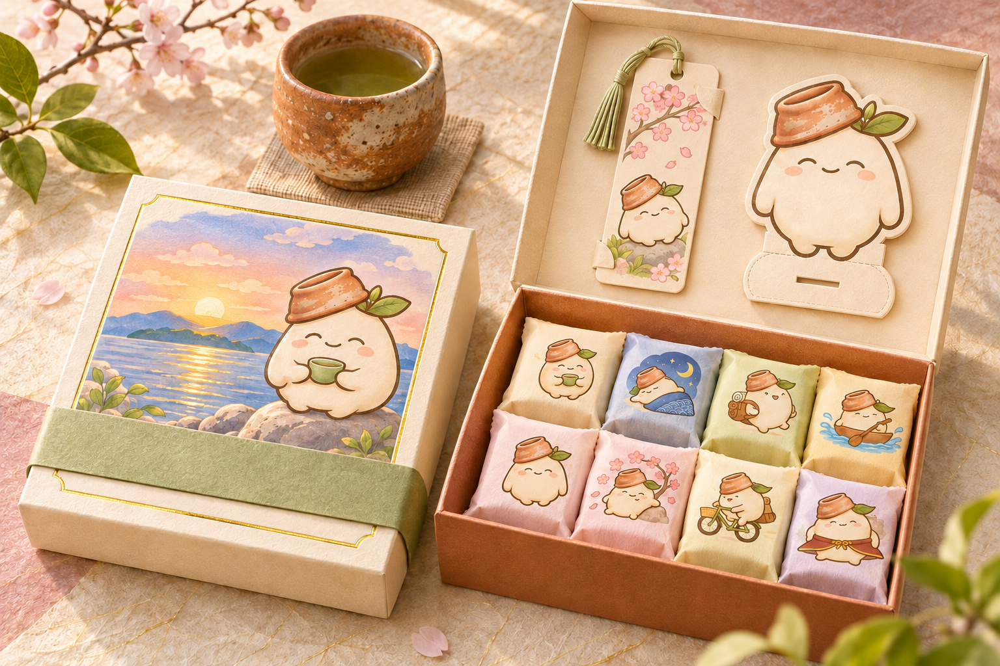

관광 × 프로덕트 파빌리온
DAY2 최종 준비 결과 뷰어
11월 27일(금) 아인즈 본사·공장 견학과 디자이너 검토를 위해 정리한 한국어 종합 대시보드입니다. 유행 굿즈 8종 조사(R1), 캐릭터 おちょころ(R2), 핵심 2품과 3단계 로드맵(R3), 일본어 발표 대본(R5)·질문(R6)을 한 화면에서 볼 수 있습니다.
R1. 2025–2026 유행 굿즈 8종 조사 및 아인즈 제작 적합성
아크릴·봉제인형처럼 외주에 의존하는 품목 대신, 아인즈 본사·공장의 특수인쇄·패키지 설비로 직접 제작 가능한 상위 3개(TOP 3)를 도출했습니다. 행을 클릭하면 상세 근거를 볼 수 있습니다.
| 구분 | 굿즈 형태 | 가격대 | 인기 근거 요약 (2025–2026) | 아인즈 제작 적합도 |
|---|
R2. 오리지널 캐릭터 시안 3종 (비중복 검증 완료)
기존 시가·근기권 캐릭터 16종을 사전 조사해 충돌(예: 오미하치만 「赤コン君」, 오사카부경 「かもすけ」)을 원천 회피한 3개 시안입니다. 이미지를 클릭하면 크게 볼 수 있습니다.
기존 시가·근기권 캐릭터 16종 중복 사전 검증표
검색창에 지역·캐릭터명·모티프를 입력하면 회피 근거를 바로 확인할 수 있습니다.
R2. 캐릭터 「おちょころ」 — 滋賀で、ひと息。
시가라키야키(信楽焼) 작은 술잔에서 태어난 그릇의 정령 「おちょころ」를 원본 모습 그대로 유지한 채, 시가 각 지역의 명물과 최근 인스타 담색(淡色·ゆるかわ) 감성으로 엮는 확장 브랜딩 스튜디오입니다.
おちょころ 최종 시트 2종
기본형(둥근 몸 + 시가라키 오초코 모자 + 오미차 잎)을 최종안으로 사용합니다. 이미지를 누르면 원본 크기로 열립니다.


おちょころ ものがたり（일본어 과거편 3부작）＆ 인스타·LINE 시안
신라키 가마터에서 버려져 까마귀에게 물려 비와호에 빠진 뒤, 자신을 버린 주인을 해하고자 츠쿠모가미(付喪神)로 깨어났으나 병든 차 농부의 찻잎 화분으로 정착해 선해진 정령 おちょころ의 일본어 3부작 소설과 현대편 시안입니다.


천 년 도자기 「그릇(器)」의 정령
고카·시가라키 가마에서 구워진 작은 오초코에서 태어난 정령. 기존 너구리 상과 결별한 모던 도예 감성이며, "그릇이니까 시가의 음식·차·밤을 다 품는다"는 서사를 가집니다.
본체는 고정, 양손 소품만 모듈 교체
둥근 아이보리 몸체·비스듬한 오초코 모자·오미차 잎은 1px도 바꾸지 않고 고정한 채, 손에 든 명물 소품(오미차·오미규·사라다빵·도리이·유리 등)만 바꿔 시가 13개 시로 무한 확장합니다.
20–40대가 붙이고 올리는 어스톤
원색 지자체 유루캬라와 다른 담색 5컬러 팔레트(크림·테라코타·말차·베이지·금박)와 무해한 탈력 말투(〜ころ)로 다이어리·텀블러·카페 인증샷을 부릅니다.
원본 유지 × 시가 지역 명물 8종 매핑
R3. おちょころ 핵심 2품 — 주유 트레카 × 기프트박스
이전 3안은 캐릭터·굿즈 판매 근거(16번 문서)에 맞춰 2품으로 합쳤습니다. 상자에서 첫 카드를 얻고 → 현지에서 모으고 → 밤 레어 카드로 숙박까지 이어지는 구조입니다.

확장 10종 → 제1탄 10장. 거점 노멀 → 제2스폿 에리어 → 18시 이후 숙박처 콜드포일 나이트레어. 63×88mm. 처음에는 팔지 않고 현장 배포·기프트박스 동봉으로 모으게 하고, 인지도가 생기면 5장 350엔 판매 팩(히코냥 트레카 수준).

공통 상자 + 과자 업체별 띠지만 교체(소량 콜라보). 안뚜껑 시가 7권역 지도, 종이 스탠드·책갈피 카드·트레카 1장 동봉. 약 200×140×50mm 천지함, 비도공 판지·박 테두리·창 필름 없음. 과자 포함 1,500~2,500엔.
종이에 그치지 않는 전개 — 3단계 로드맵
새 캐릭터는 아직 "캐릭터가 좋아서" 사지 않습니다. 그 장소에 가야 손에 넣을 수 있는 이유를 상품에 넣고, 인지도는 적은 비용으로 먼저 쌓습니다.
· 트레카: 팔지 않고 현장 배포·상자 동봉. 맨홀카드 누계 약 290만 장, 댐카드는 현 외부 사람이 62%
· 스티커: 385~550엔 모양 스티커 소량, 상자에 동봉
· 진짜 신라키야키 술잔: 캐릭터 모자를 실물로 가져가는 상품. 현지 가마와 협업(신라키야키 토토로 등 선례)
· 과자 기프트박스: 쿠마몬 관련 매출의 89%가 식품
· 트레카 판매 팩: 인지도가 생긴 뒤(히코냥도 20년 인기 위에서)
· 숙박 콜라보: 객실·어메니티(미야쿠미야쿠 룸 등 선례). 숙박률 7.8% 과제로 연결
근거: 17번 문서 · 문구류 판단은 reports/오초코로 문구류 판매 가능성.md
브랜드 포지셔닝 · 예상 질문 · 파트너
캐릭터 굿즈 진열대에서 유명 캐릭터와 싸우지 않고, "지역 기념품" 진열대에서 승부합니다. 근거 문서: 18(브랜드 가이드라인) · 19(캠페인 계획) · 20(포지셔닝·심리·협업)
② 한 곳 더, 한 밤 더: 당일치기 92.2%를 주유·숙박으로
③ 진짜로 만든다: 신라키야키·오미차·시가 과자·시가 인쇄
④ 가야 손에 들어온다: 현장 카드·분산 가챠·밤 레어
선례: 히코냥은 투구 하나로 히코네, 오초코로는 술잔 모자로 신라키
증거: 호수·성·지역 술·비와이치는 확장 10종과 상자 그림으로
보강안(시안 있음): 찻잎 모양은 그대로, 안에 실제 지도의 비와호

2. 시가 과자 업체 1곳(공통 상자+띠지)
3. 가챠 운영사(분산 설치)
4. 숙소 1곳(밤 레어 배포)
5. 신라키 가마(술잔)
파트너가 얻는 것: "두 번째 카드 장소"가 되면 손님이 걸어서 온다
모으게 하는 장치: 첫 장은 무료 → 빈칸이 보이는 10칸 홀더 → 여행 마지막에 숙소에서 가장 예쁜 밤 레어 → 상자 속 종이 스탠드는 직접 조립. 희소성은 진짜만 쓰고, 재촉하는 표현은 쓰지 않습니다.
캐릭터 × 프로덕트 조합 시뮬레이터 (12가지 경우의 수)
내일 디자이너 미팅에서 "어떤 캐릭터(또는 논캐릭터)와 어떤 굿즈를 결합할까?"를 논의할 때, 조합별 최적 타깃·공정·2027 시가 DC 연계·설득 포인트를 즉시 확인할 수 있습니다.
1단계 · 비주얼 주체 선택 (R2)
2단계 · 프로덕트 형태 선택 (R3)
R5 일본어 발표 대본 ＆ R6 아인즈 확인 질문 10선
내일 디자이너·공장 담당자 앞에서 바로 읽고 복사할 수 있는 일본어 원문과, 답변에 따라 DAY3(12/11)·DAY4(12/18) 기획을 어떻게 좁힐지 정리한 전략 가이드입니다.
R5. 디자이너 앞 2–3분 구두 브리핑 일본어 대본
A4 1장 요약 PDF 또는 9슬라이드 덱을 띄워두고 아래 순서대로 말씀하시면 됩니다.
【도입 · 방향성 (약 30초)】
本日は貴重なお時間をいただきありがとうございます。私たちの観光×プロダクトパビリオンチームでは、アインズ様のアンケートにある『滋賀＝水は91.6%と強いが、食や観光が印象に残りにくい』というギャップと、県の統計にある『日帰り客が約92%で滞在・周遊が課題』という点に着目しました。そこで、見て終わるパンフレットではなく、『持ち帰りたくなる・集めたくなる・SNSに載せたくなる』、しかもアインズ様の印刷・パッケージ技術そのものが価値になるグッズを3パターン検討してきました。
【시장조사 TOP 3 · 캐릭터 (약 1분)】
まず、2025〜2026年の流行グッズを8種類調査したところ、ぬいぐるみやアクリルは外注になりやすい一方、①特殊加工デコシール＆シール帳、②ご当地トレーディングカード、③リユース可能なデザインパッケージの3つは、紙と印刷加工で形にしやすいと考えました。貴社でどこまで対応いただけるか、ぜひ伺いたいです。キャラクターは、既存のひこにゃんや赤コン君等と被らないよう調査した上で、信楽焼のおちょこと近江茶の『おちょころ』を考え、基本形と展開10種まで描いてきました。
【프로덕트 3안 · 상담 요청 (약 1분)】
具体的な企画としては、①周遊トレカ『びわコレ』、②Z世代のシール帳ブームを狙う『しがデコ！』、③既存名産品を高付加価値化し紙製スタンドが付くリユース箱『滋賀の宝箱』の3案を用意しています。本日の工場見学とディスカッションでは、『貴社で作りやすく、12月18日の発表までに形にできそうな仕様はどれか』『おちょころをどのグッズでどう活かすか』について率直なご意見をいただきたいです。
- 문제 정의: 물 91.6% 편중 갭 + 당일치기 92.2% 과제를 "손에 남는 인쇄 굿즈"로 푼다.
- 현실성 강조: 외주형(아크릴·봉제) 대신 종이·인쇄 가공으로 만들기 쉬운 TOP 3를 골랐다(설비 대응 여부는 현장에서 확인).
- 캐릭터: 기존 16종과 안 겹치는 おちょころ 하나로 확정. 몸은 고정, 소품·배경만 바꿔 시가 명소로 확장한다.
- 오늘의 결정 요청: 12/18까지 밀고 갈 1순위 방향과 시제작 범위를 함께 좁히고 싶다.
§1·§5 일정·이동 타임라인 및 출발 전 체크리스트
체크 상태는 현재 브라우저(localStorage)에 자동 저장됩니다. 팀원 확인용 메시지 버튼으로 일본어/한국어 안내문을 바로 복사할 수 있습니다.
11/27(금) BKC → JR 야스역 이동 타임라인
본사·공장: 滋賀県蒲生郡竜王町鏡2291番地3 (야스역 집합 후 이동)
§5 팀 내 사전 확인 메시지 (제출방식·역할·추가공지)
개인/팀 제출 구분, 다른 팀원 역할 분담, DAY1 이후 Teams 추가 지시 여부를 미리 물어보세요.